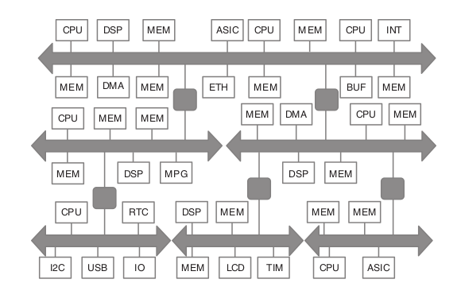
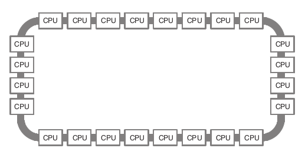
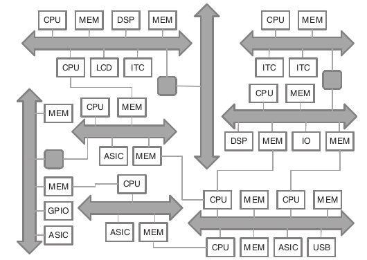
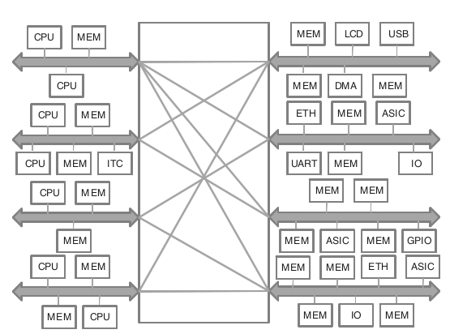

On-chip Communication Architectures
Interconnect architectures
An interconnect is a basic building block of any SoC's on-chip communication architecture. The interconnect is the connection between multiple master/slave IP blocks inside SoC. A typical basic example of an interconnect is a single shared bus. This is the simplest on-chip communication architecture, consisting of several shared, parallel wires to which various components are connected. Only one component on the bus can have the control of the shared wires at any given time to perform transfers. This limits the parallelism and achievable performance in the system, which makes it unsuitable for modern SoC that can have tens to hundreds of components. Consequently, the single shared bus architecture is not scalable to meet the demands of SoC applications.
Typical shared-bus interconnect architectures are:
- Hierarchical bus
- Ring bus
- Ad-hoc bus
- Crossbar (bus matrix)
A hierarchical shared bus architecture consists of a hierarchy of buses interconnected using bridge components. Shared buses higher up in the hierarchy are typically operated at higher clock frequencies, and are used to connect high speed, high performance components. On the other hand, shared buses lower down in the hierarchy are operated at lower frequencies to save power, and connect high latency, low performance components.
|  |
A ring bus is actually a set of unidirectional, concentric and pipelined buses which allow high frequency operation and high bandwidth transfers between components on the bus.
|  |
An ad-hoc bus architecture contains buses being operated at different frequencies and the components can have point-to-point links with each other, as needed.
|  |
A Crossbar bus is a matrix a combination of shared bus and point-to-point interconnections.
|  |
Interconnect constituents
Each bus-based interconenct is defined by its two major constituents:
- topology
- protocol parameters
The topology of a communication refers to how the buses are interconencted together, and how each component is mapped to others. The protocol parameters refer to arbitration schemes, bus widths, bus clock frequencies, buffer sizes, burst transfer sizes, which are specific to the protocol communication architecture.